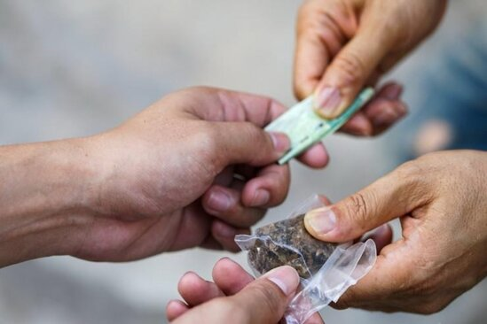

Azərbaycan və Türkiyə
prezidentləri birgə nahar ediblər

SOCAR 2023-cü ilin 1-ci rübünə dair
qazma, hasilat, emal və
göstəricilərini açıqlayıb

>SOCAR 2023-cü ilin 1-ci rübünə dair
qazma, hasilat, emal və
ixrac göstəricilərini
açıqlayıb
Dünya iqtisadiyyatının sürətli
transformasiyası və
enerji bazarlarında
baş verən dəyişikliklər
fonunda
Azərbaycan Respublikası
Dövlət Neft Şirkəti
(SOCAR) 2023-cü ilin
1-ci rübünü uğurla başa
vurmağa nail
İlham Əliyev
Beynəlxalq Avtomobil
Federasiyasının prezidentini
qəbul edib - YENİLƏNİB
Azərbaycan Respublikasının Prezidenti
İlham Əliyev aprelin 30-da Beynəlxalq
Avtomobil Federasiyasının
prezidenti Məhəmməd Ben Sulayemi qəbul edib.
"Report" xəbər verir ki, görüşdə
Azərbaycan ilə Beynəlxalq
Avtomobil Federasiyası
arasında uzun illər mövcud
olan uğurlu əməkdaşlıqdan
məmnunluq ifadə edilib.
Prezident İlham Əliyev: "Yaxın gələcəkdə Azərbaycanda “Bayraktar” mərkəzi yaradılacaq"

"Yaxın gələcəkdə Azərbaycanda “Bayraktar” mərkəzi yaradılacaq".
"Report" xəbər verir ki, bunu Azərbaycan
Prezidenti İlham Əliyev
İstanbulda keçirilən “TEKNOFEST”
aerokosmik və texnologiya festivalında çıxışında bildirib.
Türkiyə Prezidenti Kahramanmaraşda təməli
qoyulan evlərə görə
Prezident İlham Əliyevə təşəkkür edib
Kahramanmaraşda təməlini bir az əvvəl
birlikdə qoyduğumuz evlər
üçün İlham qardaşıma
çox təşəkkür edirəm.
"Report" xəbər
verir ki, bunu aprelin
29-da Türkiyə
Prezidenti Rəcəb
Tayyib Ərdoğan
İstanbulda keçirilən
“TEKNOFEST” aerokosmik və
texnologiya festivalında çıxışında bildirib.
Saatlıda qayınatasını öldürməyə
cəhd etməkdə şübhəli bilinən şəxs tutulub sok sok xeberler

Saatlıda qəsdən adam öldürməyə cəhd etməkdə şübhəli bilinən şəxs tutulub.
Bu barədə "Report"a Saatlı rayon prokurorluğundan bildirilib.
Aprelin 30-u saat 12 radələrində Saatlı rayonu Məmmədabad kənd sakinləri - 2004-cü il təvəllüdlü Əminə Əmirova və atası, 1980-ci il təvəllüdlü Kamal Əmirovun xəsarət almaları barədə rayon prokurorluğuna məlumat daxil olub.
Olimpiya mükafatçısı narkotik satdığı üçün tutuldu

Üç nəfər, o cümlədən sovet idmançısı Qoada narkotiklərə nəzarət bürosunun əməkdaşları tərəfindən saxlanılıb. Qrup əcnəbilərə narkotik maddələr satmaqda ittiham olunur. Bu işdə Varqanovadan başqa daha bir rusiyalı - adı açıqlanmayan keçmiş polis ittiham olunur.

Uşaqlarının yanında arvadını boğdu, əmisi oğlunu isə...
YOUTUBE
FAKEBOOK
GOOGLE
INSTAGRAM
>